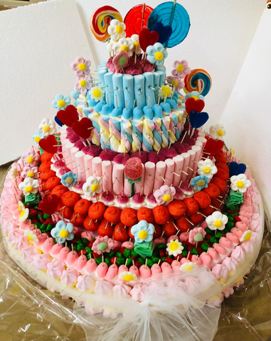
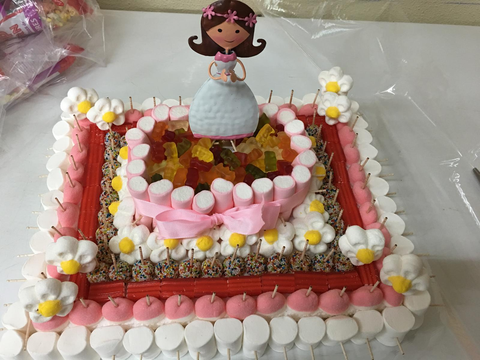
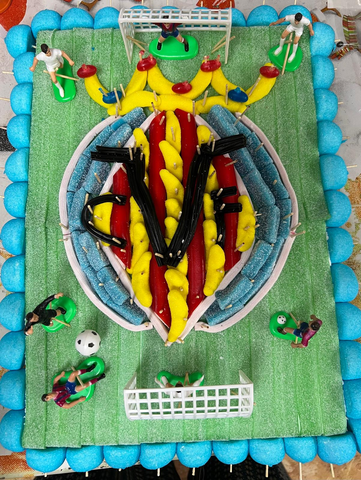

Hay regalos.
Y hay caprichos.
Tartas de chuches, regalos y pequeños mundos dulces. Hechos a mano para celebrar a esa persona tan especial.
Nosotras, el toque Capricho.

con mucho
capricho
Elige cómo hacerle sonreír.
Un detalle pequeño o una sorpresa a lo grande.
Lo hacemos personal.
Tartas a tu manera
Su nombre, sus colores y su universo favorito.

DETALLES QUE SE RECUERDANRegalos para celebrar
Detalles dulces y cestas personalizadas para sorprender.

SU MUNDO, EN CHUCHESListos para sorprender
Inspírate en nuestras creaciones y consulta disponibilidad.
Si puede imaginarlo,
podemos darle forma.
Sube una foto y describe tu idea. Adaptamos el motivo a una tarta pequeña y lo construimos en 3D con chuches.
Tu foto, convertida en chuches.
La foto guía la silueta y los colores. Construimos el diseño con lenguas, nubes, moras y regaliz, adaptado a una tarta pequeña.
Preparando el taller de chuches…
Chuches utilizadas en este diseño
Estas son las variedades representadas en el modelo. Las cantidades de piezas y recortes son orientativas para un formato de unos 24 cm.
Tu empresa tiene algo
que celebrar.
Una inauguración, un aniversario o una fiesta de equipo. Decoramos con globos y preparamos detalles y catering para dar a ese día un toque muy vuestro.
¿Una celebración particular? También puedes contarnos tu idea en este formulario.
Le damos forma contigo.
Los campos marcados con * son obligatorios.
Las cosas bonitas
se hacen con capricho.
Somos Capricho, en La Vall d’Uixó. Creamos tartas de chuches a mano y preparamos cestas personalizadas, decoración con globos y detalles para tus celebraciones.
Nos cuentas a quién quieres sorprender y lo imaginamos contigo. Cada propuesta del configurador pasa por nuestras manos antes de convertirse en una tarta real.
Cuéntanos tu idea¿Y si le damos
un capricho?
Hablamos por WhatsApp Av. Agricultor, 11 · La Vall d’Uixó, Castellón
667 636 936 · lolisd3@gmail.com